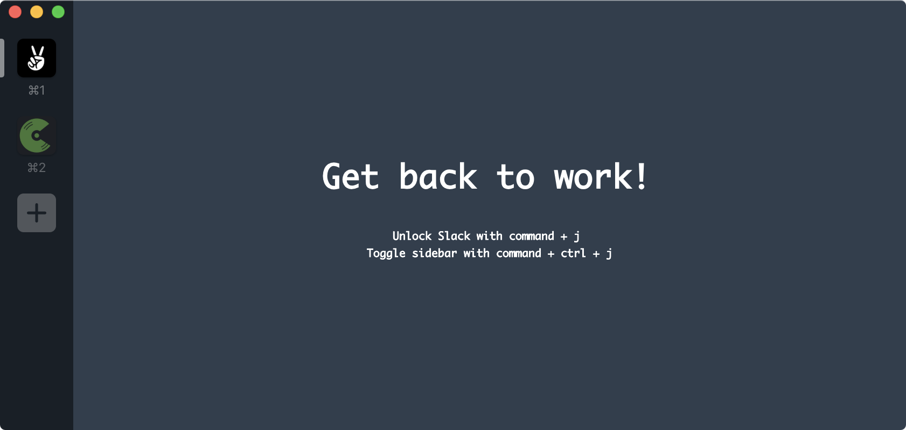

An easy way to remind yourself to stop slacking off.
Because I am easily distracted by Slack.
$ curl -s https://tonybruess.github.io/slackless/slackless.sh | bash
This patches Slack.app to load
slackless.js, a simple
user script that makes it easy to hide the Slack UI.
Slack.app is a WebView that loads
the Slack web application, so we just patch it to run some Javascript in
the context of the view.
That script then loads additional styles, adds elements to the page, binds keyboard shortcuts, and so on. It also ensures that the Developer Tools menu is always available.
Of course, you don't need to patch the app if you
don't want to; instead you can just open the Developer Tools (by
running Slack with the --dev command-line option)
and enter the above code in the Console, everytime you start Slack.
But that's no fun!